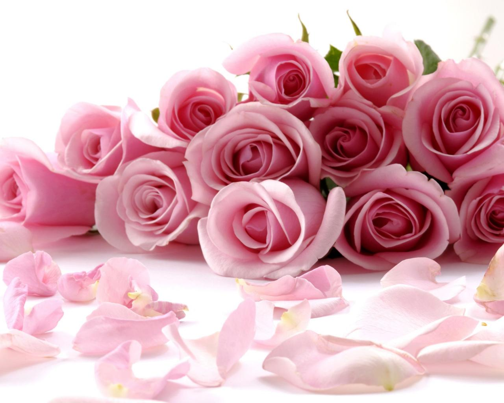
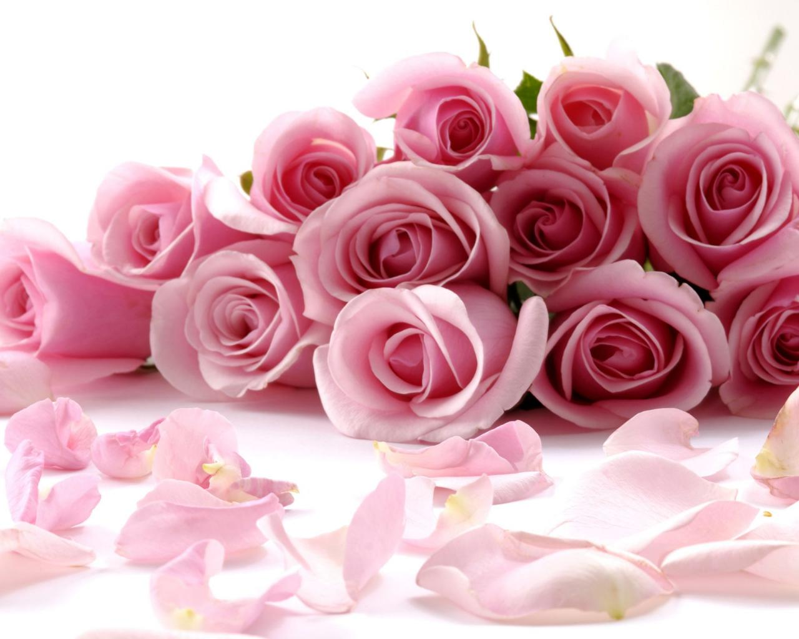

bunga-bunga memiliki warna cerah dan berbunga sepanjang tahun.
Bunga-bunga tropis antarb lain bunga sepatu, teratai, kamboja, mawar,kenanga dll.
Bunga subtropis memiliki musim tertentu untuk berbunga.
contoh bunga subtropis antara lain: sakura,tulip.

 
